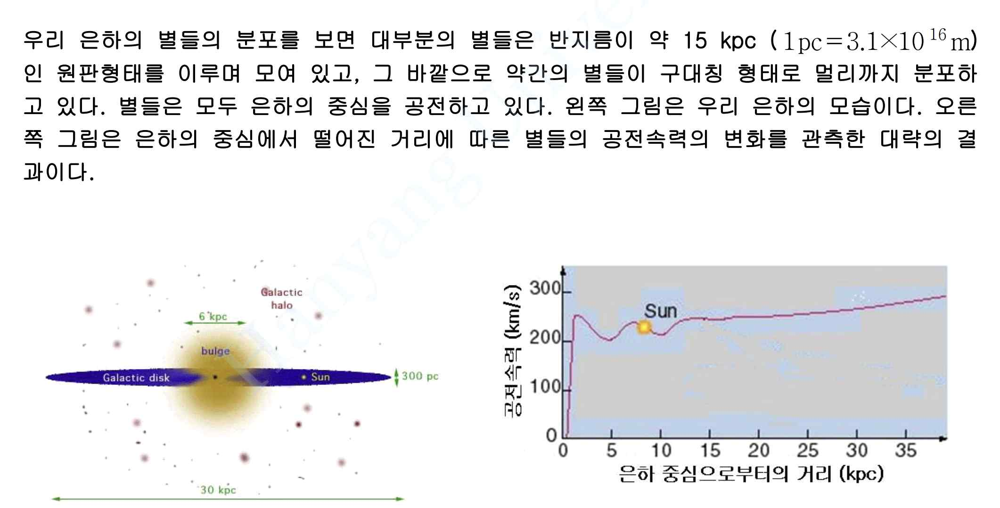
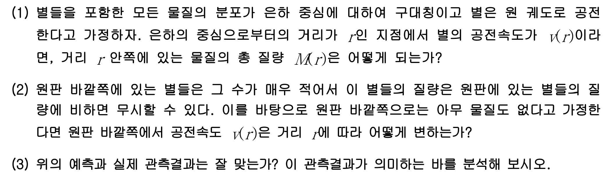

문제 6
우리 은하의 별들의 분포를 보면 대부분의 별들은 반지름이 약 15 kpc (\(1 \, \text{pc} = 3.1 \times 10^{16} \, \text{m}\))인 원판형태를 이루며 모여 있고, 그 바깥으로 약간의 별들이 구대칭 형태로 멀리까지 분포하고 있다. 별들은 모두 은하의 중심을 공전하고 있다. 왼쪽 그림은 우리 은하의 모습이다. 오른쪽 그림은 은하의 중심에서 떨어진 거리에 따른 별들의 공전속력의 변화를 관측한 대략의 결과이다.


(1) 별들을 포함한 모든 물질의 분포가 은하 중심에 대하여 구대칭이고 별은 원 궤도로 공전한다고 가정하자. 은하의 중심으로부터의 거리가 \(r\)인 지점에서 별의 공전속도가 \(v(r)\)이라면, 거리 \(r\) 안쪽에 있는 물질의 총 질량 \(M(r)\)은 어떻게 되는가?
(2) 원판 바깥쪽에 있는 별들은 그 수가 매우 적어서 이 별들의 질량은 원판에 있는 별들의 질량에 비하면 무시할 수 있다. 이를 바탕으로 원판 바깥쪽으로는 아무 물질도 없다고 가정한다면 원판 바깥쪽에서 공전속도 \(v(r)\)은 거리 \(r\)에 따라 어떻게 변하는가?
(3) 위의 예측과 실제 관측결과는 잘 맞는가? 이 관측결과가 의미하는 바를 분석해 보시오.